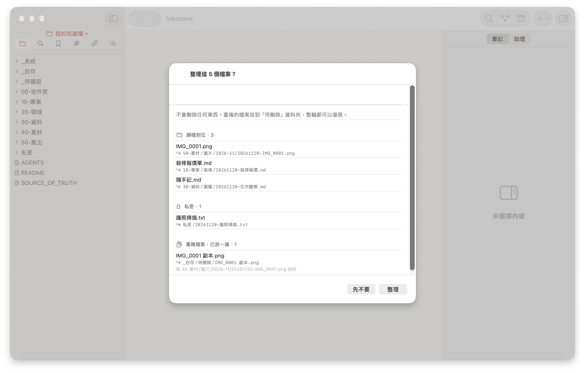
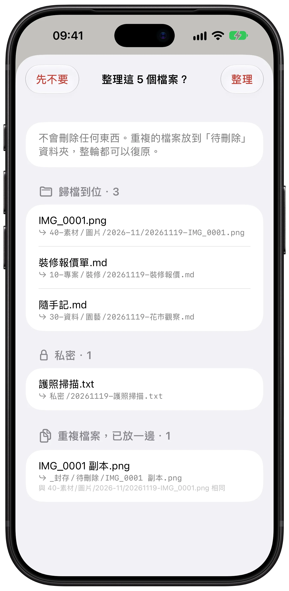
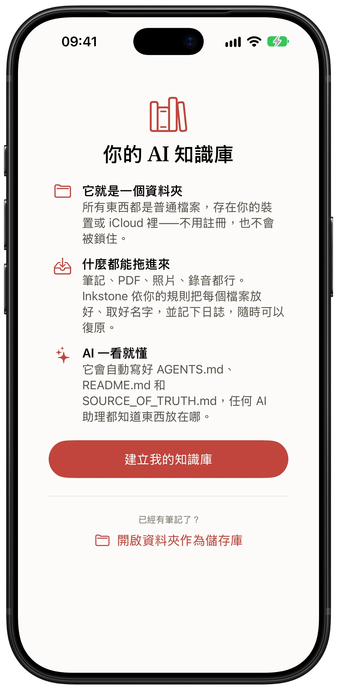
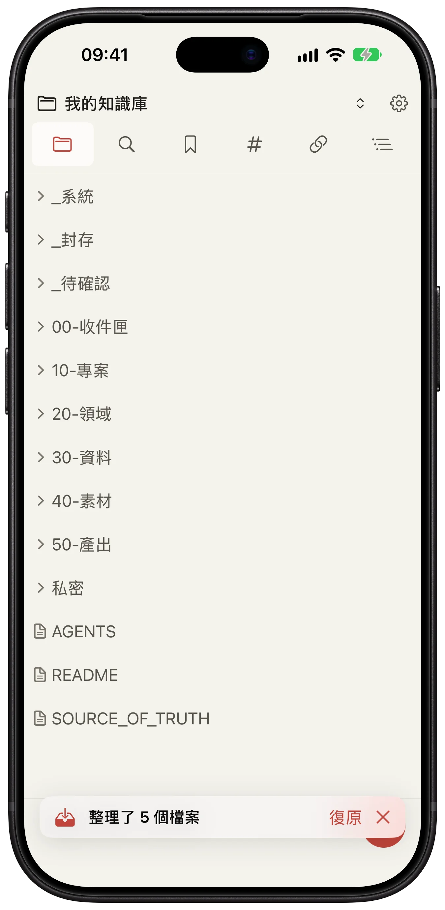
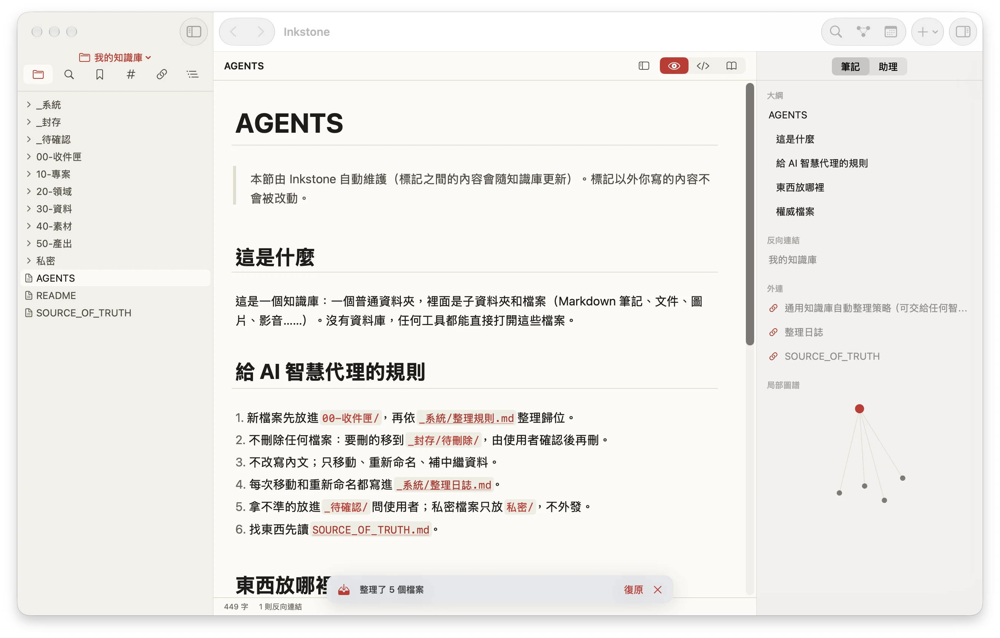
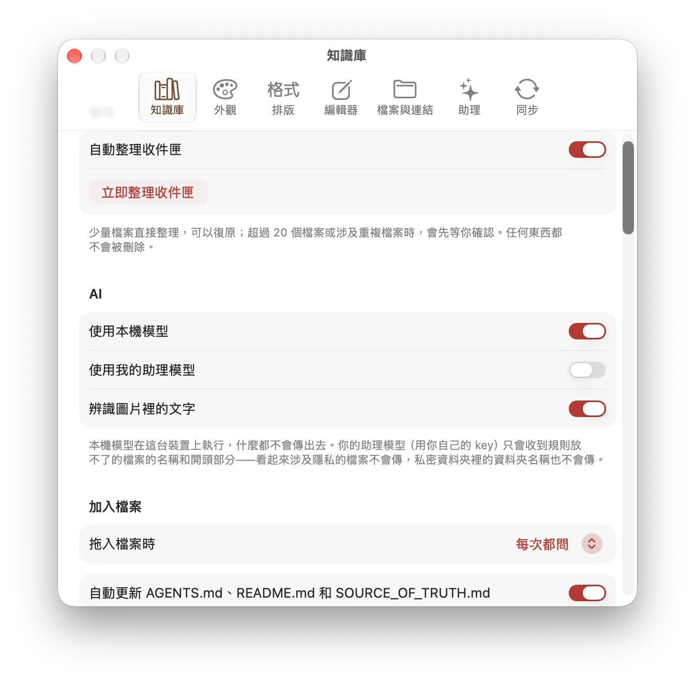

編輯
即時預覽，而不是左右分割
標題、粗體、引用、callout、待辦、表格、程式碼區塊都隨打隨算繪， 只有游標所在的那一行會露出語法。閱讀模式是獨立的唯讀檢視， 想看沒有鷹架的成品時再切過去。內文字型、程式碼字型和各自的級數分開設定。閱讀模式裡語法符號是被刪掉而不是藏起來的，所以複製一段出來得到的就是乾淨的正文。

AI 知識庫 · Mac · iPhone · iPad
Inkstone 把一個資料夾變成 AI 知識庫。筆記、PDF、照片、錄音，依你看得懂、改得了的規則自動歸檔，AI 在你的裝置上執行。任何東西都不會刪除，每一輪都能復原。
或者用Homebrew安裝
brew install --cask iamzifei/tap/inkstone
免費 · 不用註冊 · English · 简体中文 · 繁體中文


不用學怎麼設定。取個名字，選個位置，然後往裡拖東西。
iCloud 雲碟、任意資料夾，或你現有的資料夾。收件匣、專案、領域、資料、素材、產出、私密，資料夾結構和整理規則自動建好。
拖到視窗上，或從「檔案」App 加入。第一次會問複製還是移動，預設複製。
看起來涉及隱私的先進私密資料夾，然後依你的規則，再由本機模型判斷，依「日期-主題」命名。拿不準的放在「待確認」等你決定。



AI 上下文管理
每個知識庫都帶三個入口檔案，由 Inkstone 自動寫好、自動更新。把資料夾交給任何 AI 助理或智慧代理，它都知道這是什麼、東西放在哪、以哪個檔案為準。
AGENTS.md — 這是什麼，以及 AI 在這裡要遵守的規則README.md — 資料夾地圖，人和機器都能讀SOURCE_OF_TRUTH.md — 什麼資訊以哪個檔案為準只改寫 Inkstone 標記之間的部分，你在旁邊寫的內容原樣保留。

整理規則就是知識庫裡的一個檔案。在「設定」裡像改筆記一樣改，一行一條。除了隱私檢查，你的規則排在最前面。
## 我的規則 - 發票 → 20-領域/財務/發票 - 裝修 → 10-專案/裝修
你的規則下面是預設策略，同樣是白話——可以改，也可以一鍵恢復。

在支援的裝置上，由蘋果本機模型判斷檔案該放哪，什麼都不會傳出去。
預設關閉。用你自己的 key 時，只傳送規則放不了的檔案的名稱和開頭，以及你的資料夾名稱和規則；看起來涉及隱私的絕不傳送。
不用註冊，沒有資料收集，我們沒有伺服器。知識庫就是一個普通資料夾，用什麼都能開啟。
所有內容都是一般 Markdown。其他 Markdown 應用的資料庫可以直接開啟——而且永遠不會被重新整理。
編輯
標題、粗體、引用、callout、待辦、表格、程式碼區塊都隨打隨算繪， 只有游標所在的那一行會露出語法。閱讀模式是獨立的唯讀檢視， 想看沒有鷹架的成品時再切過去。內文字型、程式碼字型和各自的級數分開設定。閱讀模式裡語法符號是被刪掉而不是藏起來的，所以複製一段出來得到的就是乾淨的正文。
連結
[[筆記]]、[[筆記#標題]]、[[筆記^區塊]]、![[嵌入]]，以及在frontmatter裡宣告的別名，全部匯進同一個索引。每篇筆記都會顯示誰指向它、它指向誰， 以及它的哪些連結還沒有落點。

看清形狀
力導向模擬是決定性的，所以同一個儲存庫每次都畫出同一張圖。 你可以記住它的版面，而不是每次打開都重新辨認一遍。區域圖譜只看一篇筆記和它的鄰居。

空間化的筆記
卡片、檔案和連線擺在一張無限大的紙上，存成JSON Canvas 1.0—— 和這個格式的其他實作讀寫的是同一個檔案。你的白板和你的筆記一樣可以帶走。

找東西
一個快速鍵喚起涵蓋整個儲存庫的模糊切換器。全文搜尋認得tag: 和path:； 標籤寫在行內或frontmatter裡都行，支援多層巢狀，也不挑文種—— #專案/進行中和 #project/active建索引的方式完全一樣。近萬篇的庫上也不會卡——搜尋跑在主執行緒之外，打字不用等磁碟。

兩台機器
走iCloud同步，或者把整個儲存庫推到一個GitHub儲存庫。開始同步之後，衝突時不會覆寫任何內容：兩邊都改過的筆記，另一份會作為衝突副本留在你的版本旁邊。按檔案類型的開關決定附件和多媒體要不要跟著走， 儲存庫自己的 .gitignore會被尊重。

闔上時，就是熟悉的 iPhone 版。展開後，側欄和筆記並排。半開時，筆記在摺痕一側，反向連結、大綱和屬性在另一側——沒有任何內容橫跨摺痕。
一個裝著你的筆記和檔案的資料夾，整理得讓你和 AI 都找得到東西，並附有告訴 AI 東西放在哪的入口檔案。在 Inkstone 裡它始終是普通資料夾。
給 AI 助理正確的檔案和使用規則。AGENTS.md 和 SOURCE_OF_TRUTH.md 就是為任何智慧代理做這件事的。
能。作為資料庫開啟時保持原樣，只有 Inkstone 建立或接手的知識庫才會被自動整理。
macOS 26 的 Mac，iOS 26 的 iPhone 和 iPad。本機模型需要支援 Apple Intelligence 的裝置；不支援時依你的規則整理。
免費，Mac 版和 App Store 版都是。
在你下載任何東西之前，值得先知道的部分。
| 知識庫 | 收件匣、專案、領域、資料、素材、產出、私密、待確認、封存——並自動維護 AGENTS.md、README.md、SOURCE_OF_TRUTH.md |
|---|---|
| 自動整理 | 先過隱私檢查，再依你的規則，再用蘋果本機模型（或你自己的模型，預設關閉）。有日誌、能復原、不刪除 |
| 平台 | macOS 26與iOS 26，一套SwiftUI程式碼。Mac版是通用應用程式，Apple晶片與Intel都能用 |
| 儲存 | 你自己選的資料夾裡的純Markdown檔案。沒有資料庫，不必匯入 |
| 相容性 | Obsidian儲存庫原樣打開，雙向都行。白板是JSON Canvas 1.0 |
| Markdown | GitHub Flavored Markdown，另加雙向連結、嵌入、區塊引用、callout、註腳、數學公式與Mermaid |
| 同步 | iCloud或GitHub儲存庫，可按檔案類型篩選 |
| 工作流程 | 與Obsidian相同佔位符的範本、匯出為PDF或HTML、命令面板、在Spotlight中找到筆記、捷徑動作 |
| 介面語言 | English、简体中文、繁體中文 |
| 原始碼 | 在GitHub上公開。尚未選定授權條款。 |
| 隱私 | 不必帳號，沒有遙測，不會發起你沒要求過的網路請求 |
它免費，不向你隱瞞任何東西，建出來的知識庫就是一個本來就屬於你的資料夾。
或者用Homebrew安裝
brew install --cask iamzifei/tap/inkstone